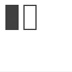

nofill
nofill()
Disables the current fill color. All shapes, paths and text following this command will be drawn without a fill color.

fill(0.3) rect(10, 10, 20, 40) nofill() rect(40, 10, 20, 40)
None
fill
nostroke